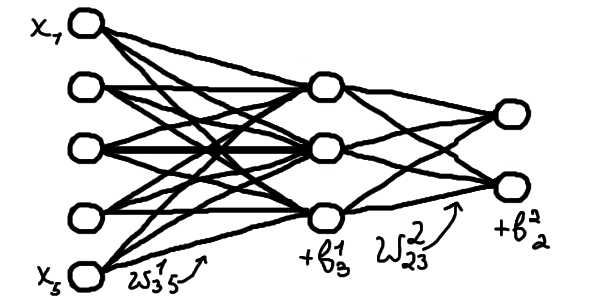
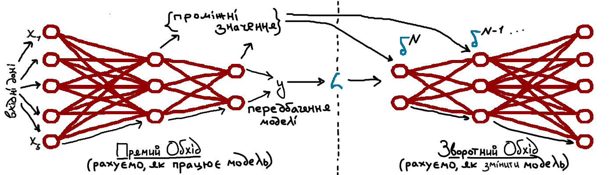
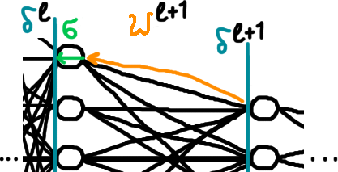
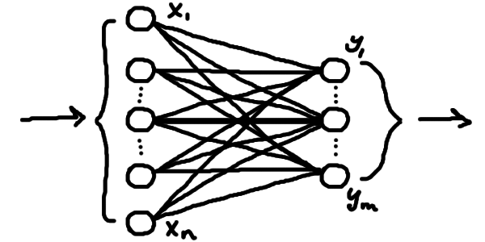
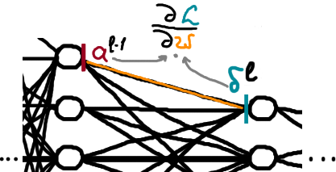
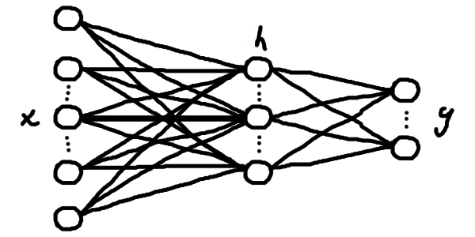
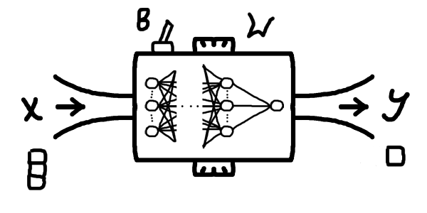

Алгоритм Зворотного Поширення Помилки
У цій статті я спробую пояснити доступно й українською ключовий алгоритм, що й дозволив увесь сучасний прогрес в області машинного навчання та штучного інтелекту — алгоритм зворотного поширення помилки (з англ. Backpropagation algorithm). Перш, ніж переходити до конкретних кроків та сенсу алгоритму, розберемося для чого застосовують цей алгоритм.
Алгоритм зворотного поширення помилки, він же backprop, застосовується саме для процесу навчання штучних нейронних мереж і є надзвичайно ефективним для цього. Це навчання штучних нейронних мереж та інших параметризованих функцій (далі називатимемо це просто моделлю) є насправді просто чисельним пошуком параметрів, за яких наша модель помиляється найменше або не помиляється взагалі. Ми розіб'ємо цю важку тему на три частини:
- Будова моделей, що навчаються
- Навчання градієнтним спуском
- Алгоритм зворотного поширення помилки (нарешті)
Фокус, звісно ж, буде на останній частині, але щоб статтю могли прочитати також і ті, хто ще не знають про градієнтні методи, я вирішив додати трохи більше опису, тобто ми почнемо з загального опису машинного навчання. Загалом, відношення між цими темами можна описати наступним чином: у нас є моделі, що навчаються виконувати якусь задачу автоматично \(\rightarrow\) ми навчаємо їх за допомогою такого математичного об'єкту як градієнт \(\rightarrow\) використовуємо наш надзвичайно ефективний алгоритм backprop, щоб швидко порахувати градієнт. Себто, весь алгоритм — швидкий спосіб порахувати градієнти. А тепер про все по порядку.
Будова моделей, що навчаються
То що ж таке ці моделі, що навчаються? Уявімо, що в нас є певна задача для програми. У загальному вигляді, маємо вхідні дані \(x\) і хочемо, щоб програма видавала певні вихідні дані \(y\). Класичний приклад: ми даємо програмі курси валют за останні декілька днів, це наш \(x\), а програма має видавати курс валют на завтра, це \(y\). Через такі приклади, \(y\) часто називають передбаченням моделі (модель тут — просто наша програма).
Ви вже можете помітити певну схожість із функціями, об'єктами шкільної програми, через ось ці ікси та ігреки. І справді, будемо розглядати всю нашу модель (тобто програму) як певну функцію \(f\), що перетворює \(x\) на \(y\): \[f(x) = y\]
От тільки, як можна зрозуміти з нашого прикладу, ми, як правило, поняття не маємо, як описати цю функцію, що вирішує нашу задачу. Наші \(x\) та \(y\) можуть бути якимись авдіозаписами, картинками, текстом, будь-чим, що закодовано числами. Писати такі програми вручну — просто неможливо, ці функції \(f\) бувають неймовірно складними. Для цього ми й використовуємо так зване машинне навчання: ми прописуємо в коді вручну лише загальну структуру, тобто який вигляд має \(x\), який вигляд має \(y\), і певну загальну форму функції \(f\), а конкретна робоча програма утворюється автоматично в симульованому процесі навчання. У найпростішому випадку під навчанням мається на увазі підлаштування \(f\) під певні заготовлені приклади правильної роботи. Для такого процесу нам необхідно мати дві речі: якісь "налаштування" у функції \(f\), які ми власне будемо змінювати, та заготовлені приклади правильної роботи моделі, щоб розуміти, як саме ми маємо міняти параметри.
А що ж це означає математично? Приклади роботи програми — це просто пари іксів та відповідних ігреків, які ми б вважали правильними: (\(\boldsymbol{x}_0;\boldsymbol{y}_0)\), (\(\boldsymbol{x}_1;\boldsymbol{y}_1)\),.. (\(\boldsymbol{x}_N;\boldsymbol{y}_N)\). Нагадую, що кожен \(\boldsymbol{x}_i\) та \(\boldsymbol{y}_i\) тут можуть бути наборами чисел, для нас \(\boldsymbol{x}_i\) — це набір попередніх курсів валют, а \(y_i\) — одне число, курс валют на наступний день (зазвичай набори чисел позначають жирним шрифтом). Ці пари, як правило, беруться зі спостережень у реяльному світі, а ми очікуємо, що наша модель буде йому відповідати, тобто що для нашої функції в результаті буде виконуватися: \[f(\boldsymbol{x}_0) = \boldsymbol{y}_0\] \[f(\boldsymbol{x}_1) = \boldsymbol{y}_1\] \[...\] \[f(\boldsymbol{x}_N) = \boldsymbol{y}_N\] Загалом позначатимемо \(f(\boldsymbol{x}_i) = \boldsymbol{y}_i\). У прикладі з передбаченням курсу валют (який, до речі, є майже неможливим для реялізації, адже курси валют залежать від величезної кількости факторів окрім курсів попередніх днів) усі \(\boldsymbol{x}_i\) будуть деякими наборами однакової довжини з курсів валют попередніх днів, а відповідні \(y_i\) будуть курсами валют на наступний день. Тобто це реяльні числа, записані протягом певного часу, що мають саме ту відповідність, яку ми хочемо встановити за допомогою \(f\). Це називається набором даних (data set).
Тепер поговоримо детальніше про ці "налаштування" у функції \(f\), що їх називають вагами. По суті, це будуть параметри функції. Якщо розглядати все зовсім початково, то наведу два приклади найпростіших функцій: параметризовану та без параметра: \[y = 5x+3 \text{; — просто лінійна функція}\] \[y = wx+1 \text{; — лінійна функція з параметром } w\] Параметрів може буде декілька (у випадку штучних нейронних мереж їх буде дуже багато): \[f(x) = wx+b \text{; — лінійна функція з двома параметрами }w,b\] Фіксуючи певні значення параметрів функції ми отримаємо непараметризовану функцію. Наприклад, зафіксувавши тут \(w = 5\), \(b = 3\), ми отримаємо нашу лінійну функцію з першого прикладу. Наша задаче буде зафіксувати такі параметри, що функція розв'язує задачу якнайкраще й помиляється якомога менше, хоча може й не ідеяльно.
Лінійна функція \(f(x) = wx+b\) була б занадто простою, щоб вирішувати сучасні задачі (не кажучи вже про те, що це просто числова функція, а навіть у нашому прикладі трохи інша ситуація). Нам потрібно більше параметрів, нелінійність та правильні розмірності \(\boldsymbol{x}\) та \(\boldsymbol{y}\). Поки що розберімося з розмірностями: у нашому прикладі \(\boldsymbol{x}\) — упорядкований набір чисел, тобто вектор з дійсних чисел, а \(y\) — одне число. Отже наша функція має приймати вектор певної кількости чисел (розмірности) та видавати 1 число (але бувають й інші випадки). Перетворювати вектор на число чи вектор іншої довжини можна й лінійними функціями, хоча й більш складнішими. У загальному випадку, лінійна частина штучної нейронної мережі має форму
Тобто це набір лінійних зв'язків між двома шарами числових нейронів. Кожному нейрону відповідає число у векторі. Ми беремо наш вхідний вектор, і робимо декілька чисел, які групуємо у вихідний (тобто розмірність вихідного вектора обираємо потрібну). Ці числа ми робимо за допомогою параметризованих лінійних функцій, що просто комбінують всі значення вхідного вектора. Наприклад, значення нейронів вихідного шару формуватиметься як \[y_1 = w_{1,1}x_1 + w_{1,2}x_2 + ... + w_{1,n}x_n + b_1\] \[...\] \[y_m = w_{m,1}x_1 + w_{m,2}x_2 + ... + w_{m,n}x_n + b_m\] де кожне \(x_i\) — значення відповідного нейрону вхідного шару (тобто відповідний елемент у вхідному векторі). Як бачимо, кожне значення з нейрону попереднього шару \(x_i\) множиться на якийсь параметр \(w_i\) і комбінується з додатковим власним доданком \(b_1\). Це навіяно сигналами природніх нейронів у мозку: нейрон приймає сигнали з сусідніх і формує свій сигнал, враховуючи сигнали інших з якимись коєфіцієнтами. Тобто якісь нейрони під номером \(i\) мало впливають на сигнал інших, якщо відповіний множник \(w_i\) близький до нуля, а якісь навпаки сильно впливають, якщо цей множник \(w_i\) великий. Для всіх нейронів одного шару одночасно (себто, у векторній формі) це можна описати як \[\boldsymbol{y} = W\boldsymbol{x} + \boldsymbol{b}\] де \(\boldsymbol{x}\) — вектор "вхідної" розмірности \(n\) (відповідно й кількість вхідних нейронів), \(\boldsymbol{b}\) — вектор параметрів "вихідної" розмірности \(m\) (скільки нейронів на виході), а \(W\) — матриця параметрів (таблиця параметрів \(m \times n\)).
Наразі я не буду надто глибоко пояснювати, як працює множення матриці на вектор \(W\boldsymbol{x}\), лише скажу, що геометрично результатом такої операції є збільшення/зменшення та/або поворот вектора \(\boldsymbol{x}\), тобто ці параметри \(W\) впливатимуть на кут повороту та конкретний розтяг вектора. Якщо вас це заплутує, то пропустіть це. Для кращого розуміння матриць та векторів раджу продивитися найкращий візуальний вступний курс лінійної алгебри англійською (є українські субтитри на деяких відео) або шукати схожі матеріяли про лінійну алгебру українською.
Ми, як правило, будуємо певний ланцюг таких шарів з нейронів (тобто лінійних шарів), застосовуючи нелінійні функції до значення кожного нейрону після кожного шару (наприклад, якусь нелінійну функцію \(a\), що називається функцією активації). Це сформує штучну нейронну мережу, тобто параметризовану функцію, що здатна вивчати складні відповідності між \(\boldsymbol{x}\) та \(\boldsymbol{y}\) — уже класичний приклад моделі, що навчається.
На малюнку 4.2: \[\boldsymbol{h} = W_1\boldsymbol{x} + \boldsymbol{b}_1 \text{; — перший шар, проміжний результат}\] \[\boldsymbol{t} = a(\boldsymbol{h}) \text{; — застосовуємо нелінійну функцію}\] \[\boldsymbol{y} = W_2\boldsymbol{t} + \boldsymbol{b}_2 \text{; — другий шар, результат обчислень}\]
Або в один рядок \[f(\boldsymbol{x}) = W_2a(W_1\boldsymbol{x} + \boldsymbol{b}_1) + \boldsymbol{b}_2\] А далі, після того, як ми визначилися зі структурою нашої моделі (кількістю шарів та розміром проміжних, який може бути майже довільним), наша задача зводиться до підбору правильних параметрів \(W_i\) та \(\boldsymbol{b}_i\), за яких модель помиляється найменше. Іншими словами, нам потрібно навчити нейрони звертати увагу на потрібні елементи вхідного вектору й виконувати необхідні обчислення.
Навчання градієнтним спуском
[Незабаром]
Алгоритм зворотного поширення помилки (нарешті)
[Незабаром]